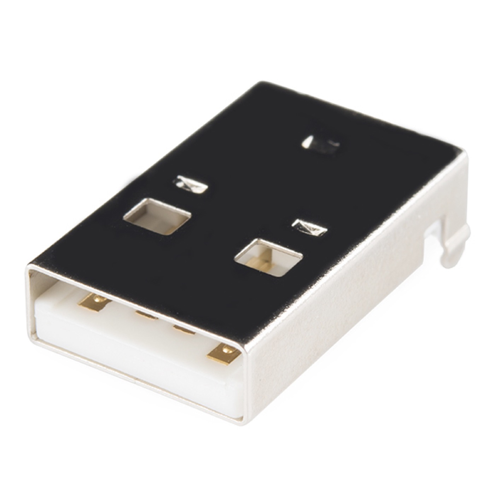
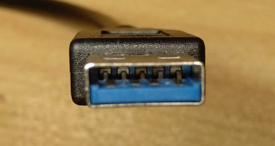
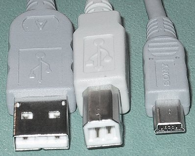
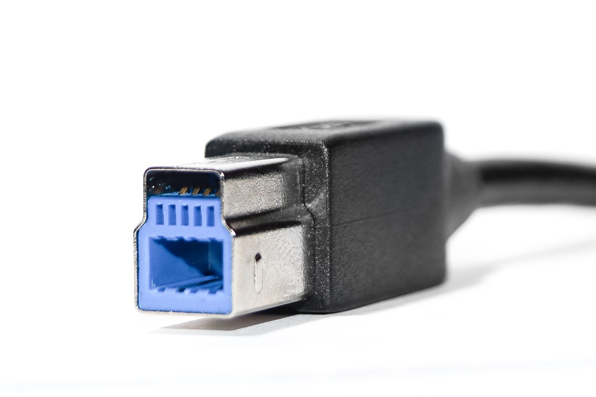
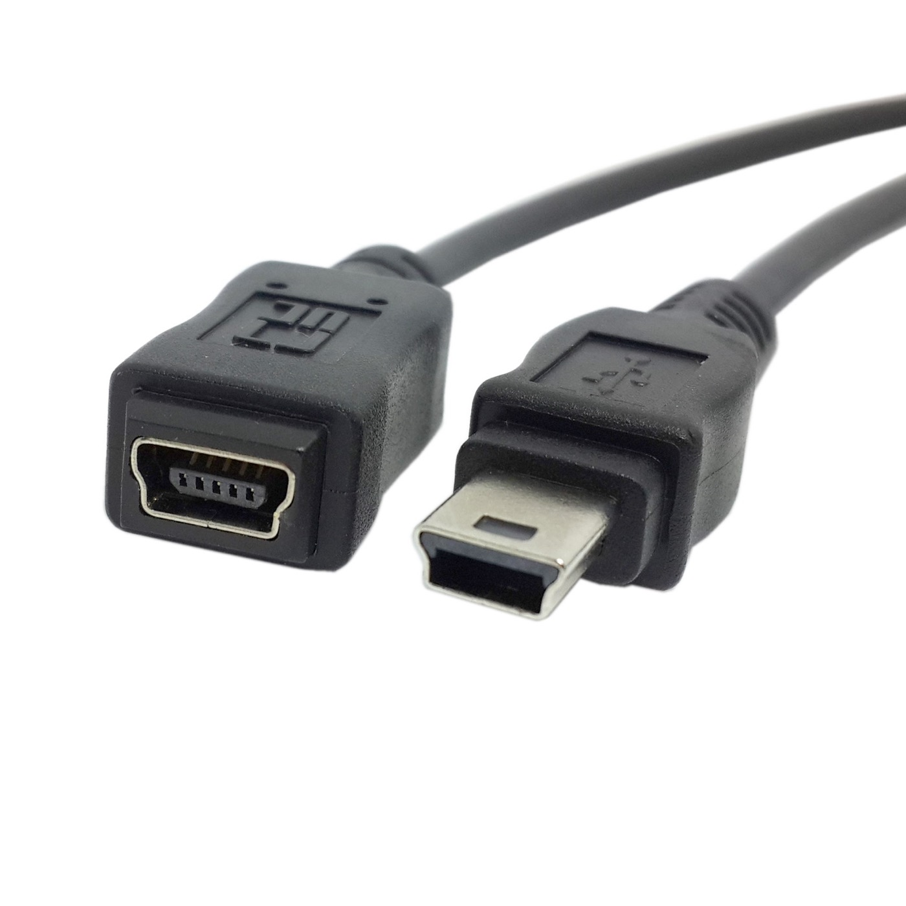
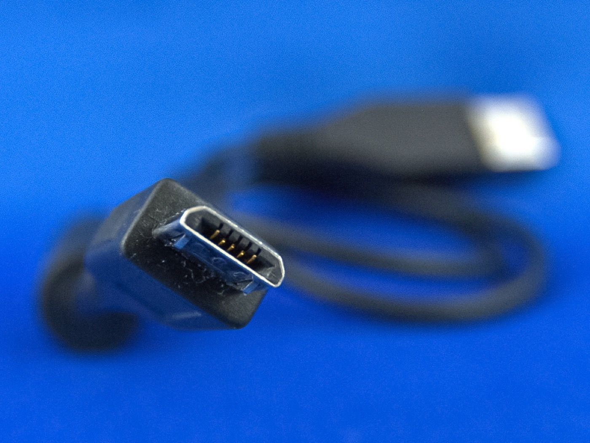
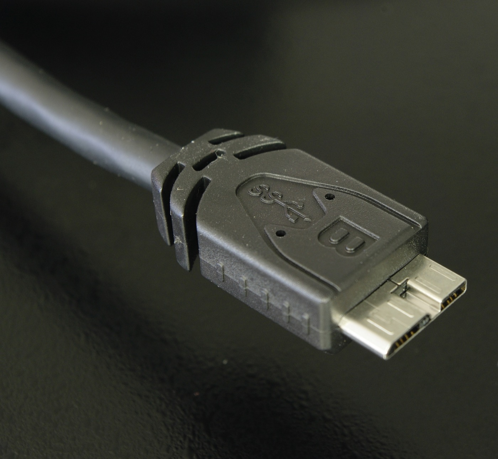
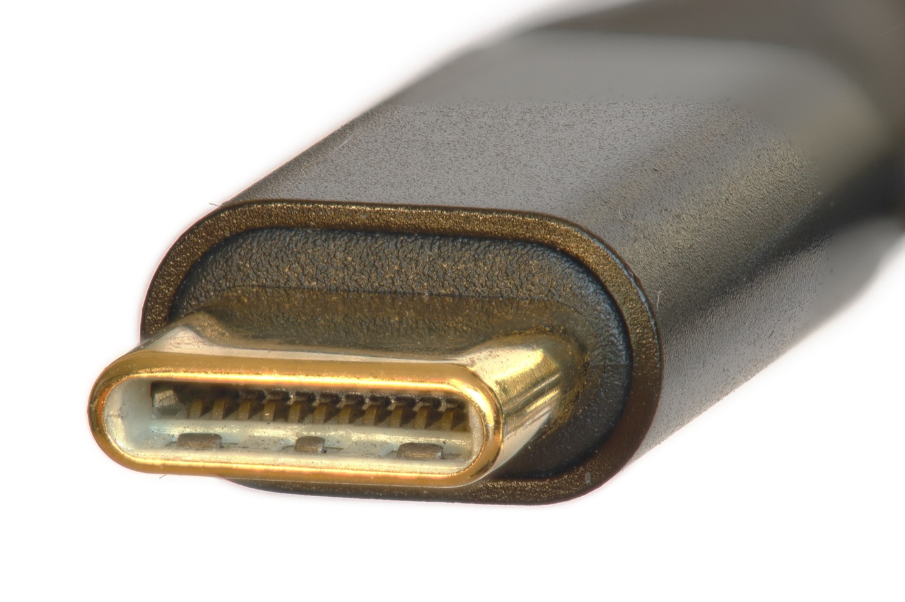

What's actually on the wires, how speed gets negotiated, and the small set of USB-C electrical rules you really need to ship.
USB carries data on a single twisted pair: D+ (sometimes labelled USB_DP) and D- (USB_DM). At high-level you can think of it as a 1-bit lane that uses two wires to fight noise — when one goes high the other goes low, and a receiver looks at the difference. Common-mode interference (something noisy nearby coupling equally onto both wires) gets cancelled out.
But USB also uses single-ended states for things differential can't express. The four named line states are:
| State | D+ | D- | Meaning |
|---|---|---|---|
| J | high | low | Idle/"1" on FS & HS (reversed on LS) |
| K | low | high | Inverse of J — drives the NRZI toggle |
| SE0 | low | low | Both wires low — used for End-of-Packet and bus reset |
| SE1 | high | high | Both wires high — illegal in normal operation, used as fault indicator |
The two single-ended states (SE0 and SE1) exist because the protocol needs to distinguish "end of packet" and "bus reset" from any normal data. SE0 is overloaded: a short SE0 marks end-of-packet, a long one (≥ 10 ms) is a bus reset request from the host. Devices listen for both.
USB has no clock line. The receiver has to recover bit timing from the data itself. To make that possible, USB encodes bits using NRZI — Non-Return-to-Zero Inverted:
Edges give the receiver something to align its clock against. So a stream like 00000000 is full of edges and easy to track. But 11111111 is a flat line for 8 bit-times — the receiver could drift.
The fix is bit-stuffing: after 6 consecutive 1s, the transmitter inserts a 0. The receiver knows the rule and strips it back out. Worst case becomes 11111101111110... — never more than 6 same-direction bits in a row, always at least one edge per 7 bit-times.
The RP2350's USB PHY does NRZI encode/decode and bit-stuffing in hardware. Your firmware sees clean bytes. The reason this matters anyway: when something looks corrupt on a logic analyzer or oscilloscope, knowing about NRZI explains why "the wire shows 11111110 but the spec says 11111111" — that trailing 0 is a stuffed bit, not a payload bit.
This is one of the cleverest pieces of USB. Before any packet is sent, the host needs to know whether to drive the bus at 1.5 Mbps (low-speed), 12 Mbps (full-speed), or attempt a 480 Mbps (high-speed) handshake. There's no "negotiation packet" — the device tells the host its speed by which D wire it pulls up:
| Device speed | 1.5 kΩ pull-up on | Pulled to VTERM |
|---|---|---|
| Low-speed (1.5 Mbps) | D- | 3.0–3.6 V |
| Full-speed (12 Mbps) | D+ | 3.0–3.6 V |
| High-speed (480 Mbps) | D+ initially, then "chirp" | FS pull-up, then HS handshake |
The pull-up voltage is the spec's VTERM — anywhere in the range 3.0–3.6 V is compliant (USB 2.0 §7.1.5.1). Most designs tie the resistor to a 3.3 V rail because that's already on the board for the MCU; if your board only has 3.0 V or 3.6 V available, you don't need a level translator just for this.
When you plug a USB device in, the host sees one of D+ or D- rise (against its own 15 kΩ pull-down on each line). That single transition tells it the device exists and what speed to start at. The host then drives an SE0 for ≥ 10 ms (bus reset), and the conversation begins.
For HS devices, the handshake is more involved: the device starts as FS (D+ pulled up), then during reset it generates a J-K toggle pattern (a "chirp") to advertise HS capability. If the host is HS-capable, it chirps back, both sides drop their pull-ups (HS is purely differential), and operation continues at 480 Mbps. If the host doesn't respond, the device stays FS. This is why an HS device never fails to connect to an FS-only host — it gracefully falls back.
Beyond data bits, four bus-level events matter:
SE0 for 2 bit-times, followed by J for 1 bit-time, then releases the bus to idle (USB 2.0 §7.1.7.4.1). Marks "this packet ends here." Receiver looks for SE0 rather than counting bytes.You'll meet all of these from your firmware as USB stack callbacks: USBD_MSG_RESET, USBD_MSG_SUSPEND, USBD_MSG_RESUME. Knowing what's happening on the wire makes it obvious why those callbacks fire when they do.
The often-quoted "2.5 mA suspend limit" is a half-truth. Per USB 2.0 §7.2.3 (table 7-7) the actual limits depend on what state the device is in:
| Device state | Max suspend current | Symbol |
|---|---|---|
| Unconfigured / low-power configured | 500 µA | ICCSL |
| High-power configured, remote-wakeup disabled | 500 µA | ICCSL |
| High-power configured, remote-wakeup enabled | 2.5 mA | ICCSH |
For most edevkit-style devices in the field — bus-powered, remote-wakeup enabled while configured — the budget is the 2.5 mA number. But before the host enables your configuration, you only get 500 µA in suspend. Plan your sleep mode for the lower of the two.
Devices initiating remote wakeup must obey three timing rules from USB 2.0 §7.1.7.7:
Everything above is about signals. The same D+/D-/VBUS/GND four wires (plus, on USB 3.x, a second pair) get packaged into a surprising number of mechanical connectors. Here are the ones you'll meet on real hardware. The "current / legacy / deprecated" labels are how the USB-IF currently classifies them; "deprecated" means new designs should not use it, not that existing devices stop working.

The big rectangular "USB" plug everyone recognises. Always on the host end of a USB 2.0 cable. Mechanically keyed but un-keyed visually, which is why it famously takes three tries to insert. White or black plastic tongue → USB 2.0; blue tongue → USB 3.x SuperSpeed (next card).

Mechanically backwards-compatible with Standard-A. The blue plastic tongue is a USB-IF convention, not a spec requirement — assume nothing from colour alone. Five extra contacts at the back of the tongue carry the SuperSpeed differential pairs. Plug into a USB 2.0 port and only the front four contacts engage.

The almost-square plug shown here in the centre (Standard-A on the left, Micro-B on the right for scale). Found on printers, audio interfaces, USB hubs, and bench instruments. Always on the device end. Survives because it's mechanically robust and obviously asymmetric — there's no wrong way to insert it.

Standard-B with an extension on top for the five SuperSpeed contacts. Backwards-compatible: a USB 2.0 Standard-B cable physically fits the lower half of a USB 3.0 Standard-B receptacle. The reverse is not true — a USB 3.0 plug won't fit a USB 2.0 receptacle. Found on USB 3.0 docks and external HDD enclosures.

Trapezoidal cross-section. Dominated digital cameras, MP3 players, and early smartphones (2003 – 2010). Officially deprecated by USB-IF in 2007 in favour of Micro-B but you'll still meet it on legacy hardware and on some bench tools (multimeters, dataloggers). Mini-A existed too, but was withdrawn in 2007 and is essentially extinct.

The Android-charger plug from roughly 2010 – 2017. Thinner than Mini-B (1.8 mm vs 3 mm) — the difference exists because Micro was designed for ultra-thin phones. Spec-rated for 10 000 insertions vs Mini-B's 5 000. Largely displaced by USB-C in new designs but still ubiquitous on cheap dev boards (e.g., classic Raspberry Pi Zero), e-readers, and budget peripherals.

The widest connector in this family for its height — Micro-B with an extra block stuck on the side carrying the SuperSpeed pairs. Backwards-compatible with USB 2.0 Micro-B (which fits in the left half of the receptacle). Mostly seen on USB 3.0 portable hard drives circa 2013 – 2018; almost never used on new designs.

The current and (by EU mandate from 2024) statutory connector for almost everything new. Reversible — there is no "wrong way up". The same shell carries USB 2.0, USB 3.x SuperSpeed, USB4, Power Delivery up to 240 W, DisplayPort, Thunderbolt, and PCIe alternate modes. As a device-side designer most of those go unused; the next H2 explains the minimum you actually need to wire up. edevkit1 uses Type-C exclusively.
The USB-IF documents call them "Standard-A" and "Standard-B" but everyone in practice says "Type-A" and "Type-B". Both are fine; they refer to the same connectors. "Type-C" is also the spec name — confusingly, the only one of these where colloquial and official names match.
Black plastic tongues are USB 2.0 "by convention", blue is USB 3.0 SuperSpeed, teal is USB 3.1 Gen 2 (10 Gbps), red is "always-on charging port". None of this is required by the USB spec. A vendor can ship any colour they want and the device will still work; conversely, a blue port is no guarantee of SuperSpeed if the vendor cheaped out. Always read the markings or the spec sheet, never trust the colour alone.
For anything new in 2026, the answer is almost always Type-C: the EU's Common Charger Directive (2022/2380, in force since 28 December 2024) requires it on most consumer electronics sold in the EU, and the rest of the world has converged on the same choice for non-regulatory reasons. The remaining cases for picking something else are narrow:
For edevkit1, Type-C was the obvious pick: regulatory cover, every modern host supports it, and the connector itself is more durable than any of the legacy options.
USB-C has 24 contacts on the connector versus USB 2.0 Type-A's 4. Most of those extras are for SuperSpeed lanes, alternate modes (DisplayPort, Thunderbolt), and Power Delivery — none of which we use. For a USB-2.0-only device with a USB-C port, the active pins are:
| Pin pair | Function | Notes for a device-only port |
|---|---|---|
| VBUS, GND | Power (5 V default) | Multiple pins, parallel them. Add VBUS-detect to a GPIO/ADC. |
| D+, D- (×2) | USB 2.0 differential pair | Two pairs on the connector — for cable-orientation flipping. Wire either pair, or both, to your PHY. |
| CC1, CC2 | Configuration channel | Carries Type-C orientation, role, and PD signaling. As a device, install 5.1 kΩ pull-downs on each. |
| SBU1, SBU2 | Sideband (DP, audio, etc.) | Leave unconnected for USB-2.0-only. |
| TX1±, RX1±, TX2±, RX2± | SuperSpeed lanes | Leave unconnected for USB-2.0-only. |
This is the most-often-screwed-up part of a USB-C device design. A USB-C device-only port (called UFP, Upstream-Facing Port) must install a 5.1 kΩ pull-down to GND on each CC line:
VBUS
USB-C ↑
port ┃ host applies 56 kΩ pull-up
───────────┻─── CC1 ─── 5.1 kΩ ── GND ← in your device
┃
───────────┻─── CC2 ─── 5.1 kΩ ── GND ← in your device
Why two? Because USB-C is reversible — the user can plug in either way up. Whichever CC line your device's pull-down is detected on tells the host which orientation the cable is in. The host's PHY then routes its TX/RX lanes to the correct connector pins. Without those pull-downs, the host doesn't see a device and won't even apply VBUS — your "broken" board is actually electrically invisible.
Do not use a single 5.1 kΩ shared between CC1 and CC2. Each line needs its own dedicated pull-down. Sharing one resistor breaks orientation detection and will confuse some hosts into thinking they're seeing a powered cable instead of a device.
USB-C ports may be on hosts that supply VBUS only when they detect a device (after CC handshake). Your firmware should not assume VBUS is present whenever the cable is connected. Route VBUS through a divider (e.g., 100 kΩ / 100 kΩ to halve to ~2.5 V) into an ADC pin and check it before enabling the USB PHY. This also gives you the input you need to support self-powered modes.
USB-C cables > 3 A or with USB-PD > 60 W contain a small chip ("e-marker") that the host can query over CC for the cable's capabilities. As a device, you don't need to know or care — your CC pull-downs and VBUS-detect work the same with or without an e-marker. The complexity exists for hosts negotiating power, not for devices.
USB-C can carry a lot more than USB 2.0. We're not doing any of it on edevkit1:
At 12 Mbps full-speed, USB is forgiving. The main failure modes you'll see on a hand-soldered prototype are:
Aim for < 80 mm of D+/D- trace from connector to PHY. Match D+ and D- lengths within 0.5 mm. Target ~90 Ω differential impedance — on a typical 4-layer 1.6 mm FR4 stack, that's roughly 0.13 mm trace width with 0.18 mm gap on the outer layer. Your PCB fab can spit out a stackup and you can use their controlled-impedance calculator. At FS this is "nice to have, not catastrophic if missed by 20%". At HS it's mandatory.
A small CMC (e.g., Murata DLW21SN900HQ2) in series with D+/D- right at the connector helps EMI without affecting differential signal. Not required for prototype, but most production designs include one. Be sure to pick a part rated for USB (90 Ω at 100 MHz is the typical spec) — a generic CMC will distort the signal.
USB is the most-likely path for ESD events on a portable device — a user touches the connector with a charged finger. Add a low-capacitance TVS diode array (e.g., USBLC6-2) on D+/D-/VBUS at the connector. RP2350's PHY pins are already moderately ESD-tolerant, but the diode is cheap insurance.
VBUS-to-3.3V regulator: a 10 µF bulk + 0.1 µF decoupling at the regulator input is enough. If your host is sensitive (rare), add a ferrite bead in the VBUS line to attenuate switching noise from your 3.3 V regulator back into the host.
Putting it together for the edevkit1 board:
USB_DP = pin 48, USB_DM = pin 46 on the QFN-80 package — datasheet §1.2.2).That's the complete USB-C-side checklist. Seven components, a couple of trace rules, and you're done. Most of the difficulty in USB is on the protocol side (the rest of this book), not the wires. Ch 14 opens up the RP2350 USB block from the firmware side.
"Plugging in does nothing — host sees no device, no VBUS even applied." CC pull-downs missing or shorted. With no 5.1 kΩ, the host doesn't see a UFP and won't enable VBUS. Multimeter the CC1 and CC2 pins to GND with the cable disconnected: each should read ~5.1 kΩ.
"Works on Linux laptop, fails on a USB-C wall hub." The wall hub is more strict about CC orientation. Check that you have a pull-down on both CC1 and CC2, not just one — single-CC designs work on lenient hosts and fail on strict ones.
"Random enumeration failures, especially with longer cables." Trace length, common-mode noise, or marginal impedance. Try a short, known-good 1 m cable. If that fixes it, your D+/D- trace tuning is borderline. If it doesn't, look at VBUS noise.
"My device gets enumerated as low-speed when I expected full-speed." Pull-up is on D- instead of D+, or has the wrong value. RP2350 manages its own pull-up in firmware via SIE_CTRL.PULLUP_EN; the strength is selectable via SIE_CTRL.RPU_OPT (0 = ~1.2 kΩ default, 1 = ~2.3 kΩ — the USB 2.0 spec target is 1.5 kΩ ± 5 %, so RP2350's default is intentionally softer). Confirm the speed configuration in $ZEPHYR_BASE/drivers/usb/udc/udc_rpi_pico.c or see Ch 14 §3b.